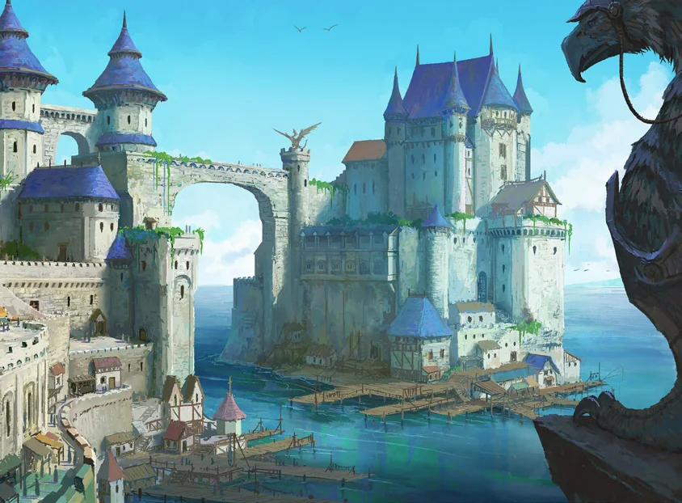
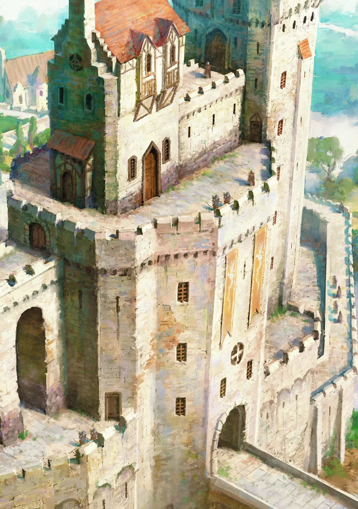

Uma cidade portuária inquieta na fronteira do reino, onde o alcance da civilização começa a desaparecer diante das terras indomadas. Situada na costa mais distante da capital imperial, Esperança Distante é um farol de oportunidades para mercadores, estudiosos e aventureiros do mundo inteiro. Seus cais recebem mercadorias exóticas e exploradores dispostos a enfrentar expedições perigosas rumo ao desconhecido.
Conteúdo da seção
Locais Importantes
Grifo Dourado. Uma estalagem popular entre viajantes cansados, com lareiras quentes, quartos confortáveis e refeições substanciais. Administrada por Elara, é famosa pelo Ensopado de Grifo e por uma adega secreta usada em reuniões importantes ou para esconder rapidamente quem a guarda deseja interrogar ou prender.
Os Cais. Centro movimentado do comércio, repleto de navios vindos de terras distantes. Mercadores negociam, marinheiros contam histórias e o ar salgado mistura o rangido da madeira aos gritos dos trabalhadores. É um bom lugar para conseguir contratos ou informações.
Bairro dos Nobres. Distrito opulento de grandes propriedades e jardins impecáveis. Sob a aparência refinada, famílias nobres disputam poder e influência sobre a cidade.
Bazar dos Sussurros. Mercado extenso onde se vendem bens raros e objetos peculiares, frequentemente obtidos por meios questionáveis. Tudo pode ser comprado ou vendido, desde que se saiba com quem falar.
Torre da Alvorada. Um farol colossal na extremidade dos cais. Seu sinal mágico conduz navios através de águas perigosas. É operado por uma figura enigmática conhecida apenas como “o Guardião”.
Cemitério do Recife Negro. Um cemitério castigado pelos ventos, próximo à periferia, onde marinheiros e exploradores perdidos no mar são enterrados. Os moradores evitam o local depois do anoitecer; Necromantes e pessoas que buscam pactos com espíritos das profundezas fazem o contrário.
Inúmeras facções disputam continuamente o controle da cidade, mas somente três exercem poder real.
A Companhia Dourada
Uma ordem de soldados e mercadores dedicada à proteção e prosperidade de Esperança Distante. Controla grande parte do comércio e influencia profundamente o governo da cidade. Sua cidadela, o Salão das Lâminas, ergue-se no centro urbano como símbolo de poder e força, oferecendo proteção e intermediando acordos comerciais.
A Companhia estabeleceu parcerias essenciais com os Anões das Montanhas da Forja Gélida e mantém uma aliança crucial com A Torre para proteger o Portão Branco contra ameaças da Praga Sombria.
Recém-chegados recebem permissão para explorar todas as regiões próximas, exceto a Praga Sombria, perigosa até mesmo para a missão da Companhia. Sua presença é sentida por toda Esperança Distante, impondo ordem e estabilidade pela força de vontade. Embora suas intenções sejam consideradas irrepreensíveis, seus métodos podem ser excessivamente severos.
NPCs Importantes
Marcius Thel. Grande Comandante da Companhia Dourada. Um Juramentado experiente de rosto marcado, conhecido pela determinação inabalável e por táticas implacáveis contra as trevas. É respeitado pelos aliados e temido pelos inimigos. Considera medidas severas necessárias para garantir a segurança do reino.
Gideon Blaze. Recrutador-Chefe. Atrai novos membros com relatos apaixonados de heroísmo e devoção. Por trás do sorriso magnético há um estrategista calculista, sempre procurando ampliar a influência da Companhia.
Sir Alric Vayne. Capitão da Guarda da Cidade. Conhecido por seu rígido senso de honra e muito valorizado pela nobreza.
Irmã Avelina. Curandeira compassiva e respeitada pelo povo, mas que guarda dúvidas secretas sobre os métodos da Companhia.
Guilda dos Exploradores
O coração pulsante do espírito aventureiro de Esperança Distante, a Guilda dos Exploradores organiza expedições aos ermos em busca de ruínas antigas, civilizações perdidas e riquezas incontáveis. Contudo, ela também serve de refúgio para contrabandistas e patifes, alimentando uma corrente subterrânea de intrigas e negócios obscuros.
O Cofre da Guilda é um centro agitado, onde aventureiros de todos os tipos compartilham histórias, formam alianças e aceitam contratos que prometem perigo e recompensa. Além de missões legítimas, membros da Guilda participam do contrabando clandestino de valiosos Cristais de Aerólito das Ilhas Altacéu, cobiçados por suas propriedades mágicas. Ali, segredos são moeda, e a fronteira entre heroísmo e vilania frequentemente se desfaz.
NPCs Importantes
Tink Dabblefizz. Chefe alegre e ardiloso das forças expedicionárias. Este Gnomo lê as pessoas com facilidade e identifica mentiras ou meias-verdades à distância. Ensina recrutas a confiar em táticas inteligentes e astúcia, vencendo desafios por meio de engenho e subterfúgio, não de força bruta.
Grivnik, o Negro. Goblin talentoso em Furtividade e negociação. Como executor da Guilda, resolve contratos difíceis e lida com aventureiros problemáticos por intimidação e barganha; quando isso falha, usa violência. Por trás da aparência dura, possui um fraco por causas perdidas.
Jara Pés-Ligeiros. Ladina Halfling ágil e espirituosa, responsável pela rede de informações. Rápida no sorriso e ainda mais rápida com a lâmina, reúne os segredos de que a Guilda precisa. Conhece os negócios de praticamente todos na cidade.
Keldon, o Intermediário. Sempre impecavelmente vestido, é especialista em fazer as coisas acontecerem nos bastidores. Possui uma rede extensa e talento para limpar situações complicadas, deixando os envolvidos sem entender como acabaram do lado dele. É um ótimo aliado quando alguém se mete em problemas grandes demais.
A Torre
Uma poderosa ordem de Magos e conjuradores dedicada a desvendar os segredos arcanos e ampliar os limites do conhecimento mágico. Sua sede funciona como refúgio de estudos e centro de inovação. A Torre busca compreender a magia e os mistérios do mundo, mas sua fome de conhecimento às vezes conduz a experimentos perigosos ou à tentação de pactos profanos.
Pessoas consideradas dignas de confiança são frequentemente contratadas para capturar criaturas mágicas nos Pântanos Rosnantes, recuperar Magias perdidas nas Dunas Definhantes ou buscar artefatos arcanos na Mata Anciã.
NPCs Importantes
Elara Voss. Enigmática líder da Torre. Seu olhar penetrante e sua presença intimidadora tornam-na formidável. O domínio das artes arcanas alimenta rumores de pactos sombrios.
Morgana Talus. Especialista em artefatos antigos e mestre em decifrar runas e maldições. Pode ser ríspida e impaciente, mas costuma ser a primeira a revelar os segredos de textos e relíquias levados à Torre. Muitos aventureiros dependem dela para identificar descobertas, quando conseguem pagar seus honorários elevados.
Lyra, a Oráculo. Adivinha nervosa, porém brilhante, usada como oráculo da Torre. Suas visões são precisas, mas o preço cobrado por elas fragilizou sua mente, tornando-a vulnerável e indispensável. Embora pareça tímida e assombrada pelo que vê, suas revelações são valiosas demais para serem ignoradas.
Veylin Sem-Sobrancelhas. Piromante obcecado por magia profana. Sua instabilidade e seus experimentos perigosos lhe renderam reputação controversa, mas seu poder é inegável.
Esperança Distante
Página composta apenas por uma ilustração de uma grande cidadela branca construída sobre penhascos costeiros.